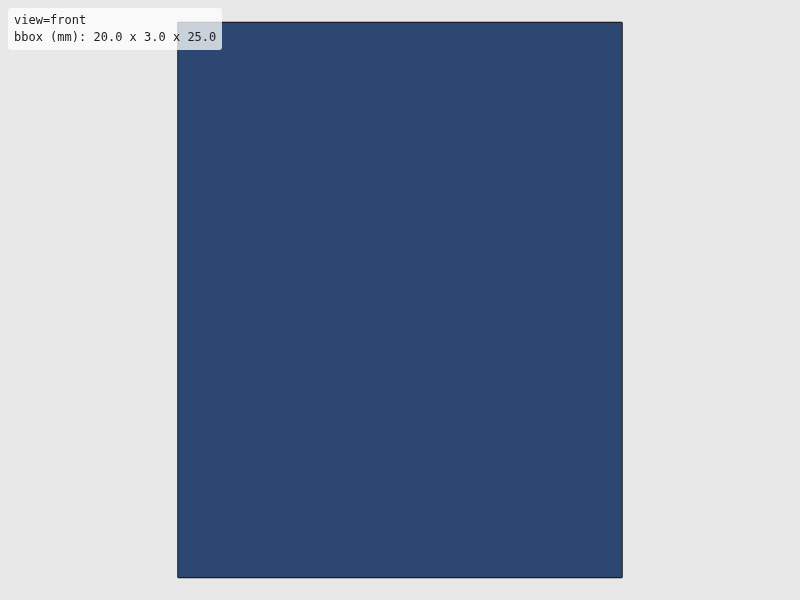
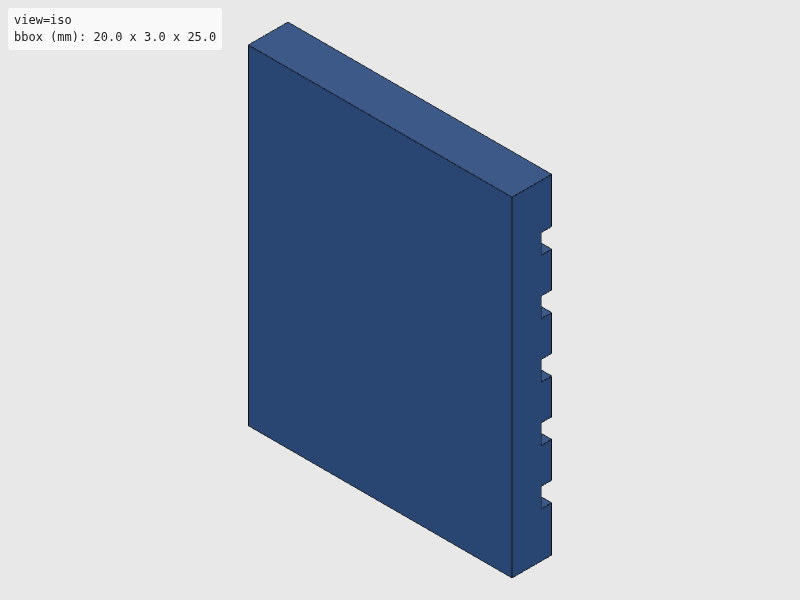
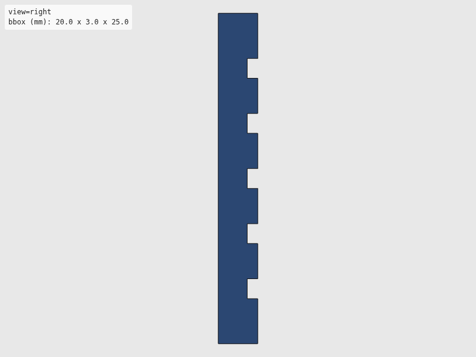

Verdict: review
Green is necessary, not sufficient: these checks cannot see local defects. Look at the render and decide.



The intent as written, for comparison with the renders. Not checked.
"""Compliant gripper fingertips — print in TPU 95A.
Adds soft grip surface to SO-101 stock gripper fingers.
Reference: https://www.thingiverse.com/thing:7153144 (NekoMaker TPU grip)
Usage:
uv run --group cad python hardware/cad/so101/gripper_tips.py
"""
# Shared export helper (standalone mode)
import sys
from pathlib import Path
from build123d import Box, Pos
sys.path.append(str(Path(__file__).resolve().parent.parent))
from util.export import export_part
sys.path.pop()
# --- Parameters (all in mm) ---
# SO-101 gripper finger (approximate)
FINGER_WIDTH = 20.0
FINGER_DEPTH = 8.0
TIP_THICKNESS = 3.0
TIP_LENGTH = 25.0
# Grip texture (ridges)
RIDGE_COUNT = 5
RIDGE_DEPTH = 0.8
RIDGE_WIDTH = 1.5
def build_gripper_tip():
"""Build one compliant gripper fingertip."""
tip = Box(FINGER_WIDTH, TIP_THICKNESS, TIP_LENGTH)
# Cut grip ridges on contact face
for i in range(RIDGE_COUNT):
z = -TIP_LENGTH / 2 + (i + 1) * TIP_LENGTH / (RIDGE_COUNT + 1)
ridge = Box(FINGER_WIDTH + 1, RIDGE_DEPTH, RIDGE_WIDTH)
ridge = Pos(0, TIP_THICKNESS / 2 - RIDGE_DEPTH / 2, z) * ridge
tip = tip - ridge
return tip
def export(part) -> None:
"""Export to STL and SVG."""
export_part(part, "so101", "gripper_tips_tpu")
if __name__ == "__main__":
export(build_gripper_tip())
| Check | Status | Detail |
|---|---|---|
| file_integrity | PASS | binary STL: header present, 92 triangles, file length matches 84 + 50*n |
| watertight | PASS | watertight=True, winding_consistent=True, euler_number=2 (reported only, not asserted — plan §7.2) |
| bbox | SKIP | no --envelope given |
| volume | SKIP | no --volume-band given |
| browser_load | PASS | viewer reported body[data-state]=rendered |
| render | PASS | 4 view(s) captured at 800x600 |